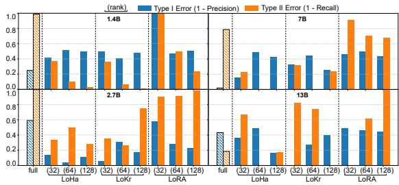

Figureure 4 · : Broken per-token linear separability of visual tokens, marked in FigFig. 4: Broken per-token linear separability of visual tokens, marked in Figure 1, tested by the default settings on ImageNet.这张图来自论文 PDF 的结构化抽取。当前用于辅助理解 Dive Into the Implicit Biases 的方法或实验，请结合正文精读段落一起看。

Figureure 3 · : Type -I and -II error rate: models and lowrank operatorsFig. 3: Type -I and -II error rate: models and lowrank operators. The results are on $\mathrm { P O P E , }$ a visual perception hallucination benchmark.这张图/表用于判断 Dive Into the Implicit Biases 的实验收益来自哪里。重点看替换、消融或跨模型设置下趋势是否一致，而不是只看单个最高分。